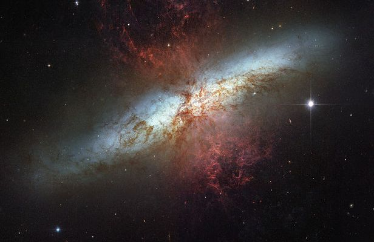

Las galaxias irregulares son un tipo de galaxia que no tienen una estructura definida, como los brazos espirales de las galaxias espirales o la forma elipsoidal de las galaxias elípticas. Son caóticas en apariencia, sin un núcleo claro ni una simetría evidente. A menudo, estas galaxias están distorsionadas debido a interacciones gravitacionales o colisiones con otras galaxias.
Falta de forma definida:No presentan una estructura regular como las espirales o elípticas. Su forma es asimétrica y puede variar considerablemente de una galaxia a otra.
Composición estelar:Las galaxias irregulares contienen una mezcla de estrellas jóvenes y viejas, así como nebulosas (nubes de gas y polvo) donde se están formando nuevas estrellas.
Formación estelar activa:Las galaxias irregulares suelen tener muchas regiones donde el gas y el polvo colapsan para formar nuevas estrellas, por lo que suelen ser galaxias con gran actividad estelar.
